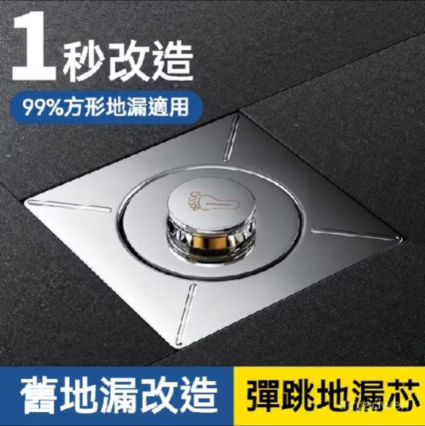
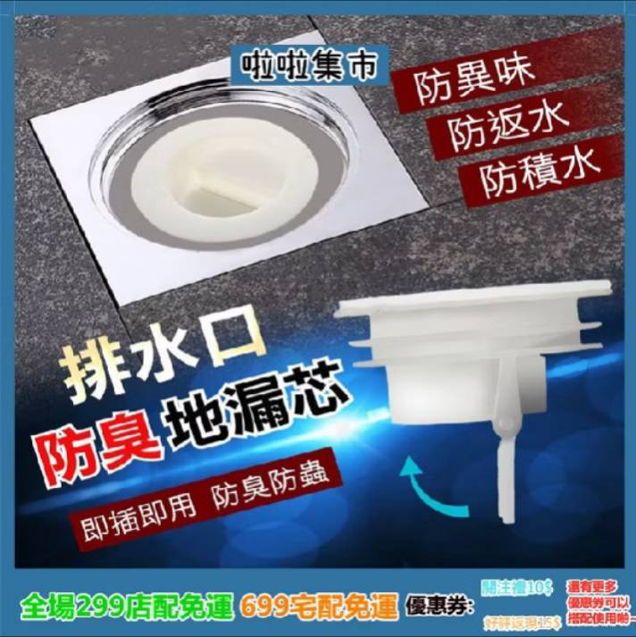
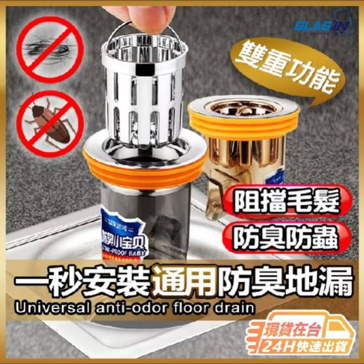
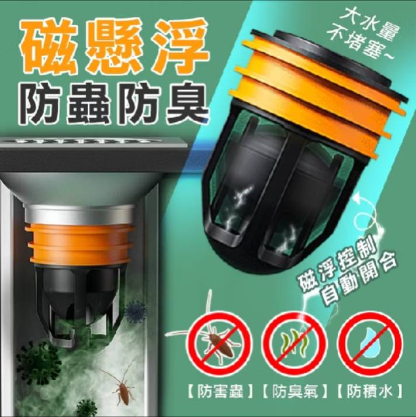
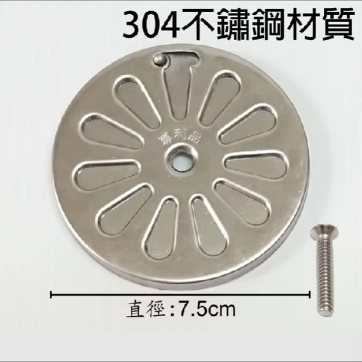

如何解決廁所異味：最佳地漏與排水蓋選擇方案
廁所是家庭中最容易產生異味的區域之一，這些異味不僅讓人感到不適，還會影響家中的空氣品質。異味的來源通常來自排水口、通風口以及馬桶的封閉不嚴。本篇文章將針對地漏和排水蓋的選擇提供詳細建議，幫助你解決這些困擾，讓家中的廁所保持清新無異味。
經過研究後，我發現市面上的地漏大致可以分為三大類型，根據不同的原理防止異味和蟲害入侵。接下來，我將一一介紹這些地漏設計的原理、優缺點，並提供購買建議，幫助您有效解決廁所異味問題。
常見的地漏設計
1. 存水彎原理隔臭設計
這種排水蓋利用存水彎的原理，通過水的自然積存形成物理屏障，防止臭味和小蟲通過排水管道進入廁所。這類地漏適合安裝在經常有水流經的區域，如浴室。
優點:
- 有效阻擋臭味和蟲害。
- 原理簡單，易於維護。
缺點:
- 若安裝在不常用水的區域，水封會乾涸，失去防臭效果。
也簡單說明一下甚麼是存水彎，存水彎（P-trap）是一種管道裝置，通常位於排水管下方，常見於廁所、洗手盆和浴缸的排水系統中。它的設計目的是利用水形成物理屏障，防止下水道中的臭氣和蟲害通過排水管返回室內。
存水彎的原理是依賴於水的積存。當你使用水時，部分水會留在管道的彎曲處，這些水就形成了一個屏障，封閉了下水道的通道，從而阻止臭味和蟲害通過排水管逆流進入室內。這是一種被動的防護裝置，只要有水，它就能持續發揮作用。
如果長時間不使用，存水彎內的水會逐漸蒸發，失去防臭功能。因此，存水彎的防護效果依賴於排水口的使用頻率。
例如以下這款就是簡易存水彎設計的地漏：
存水彎防臭防蟲：購買連結。
2. 水流開啟型設計
這種地漏設計只有在有水流經過時才會自動打開，水流結束後排水口會自動關閉，形成物理屏障，避免臭味和蟲害。低頻率使用的排水孔也適用。
優點:
- 低頻率使用的排水孔也適用。
- 有效防止臭味和蟲害，不依賴存水設計。
缺點:
- 需要確認其開合設計的耐用性。例如長期積累水垢，可能影響靈活性。
基本款式地漏：購買連結。
磁吸式地漏：購買連結。
磁吸式地漏的工作原理是利用磁力來控制排水口的開合。在這類設計中，當有水流經過時，排水口會自動打開，讓水順暢排出；當水流停止後，磁力會讓排水口自動關閉，形成一個緊密的密封，阻止臭味和蟲害從排水管道逆流進入室內。

雙重功能地漏：購買連結。
同時具有濾網的功能，讓使用者方便清理毛髮。
重力球地漏：購買連結。
當水流經過時，重力球會自動下沉並打開排水口，無水時則自動回位密封
3. 人為操作開關設計地排
此種地漏帶有人工開關，用戶可以根據需要手動打開或關閉排水孔。這類地漏設計適合長期不使用的區域，比如未經常排水的廁所或儲藏間。或是也可以跟上述的地漏搭配使用。
優點:
- 完全密封，防臭防蟲效果最佳。
- 適合低頻率使用的區域。
缺點:
- 需要手動操作，若忘記關閉則失去防護效果。
基本開關款式排水蓋：購買連結。
這款設計只有在水流經過時才會打開，排水結束後即自動關閉，有效防止蟲子爬入。
按壓式地漏：購買連結。
這款設計也是靠人工進行開關，但造型更為時尚。
清潔排水孔的建議
無論使用哪款排水蓋，保持排水孔的清潔是預防臭味的關鍵。毛髮、肥皂殘留等長期堆積會導致異味問題，使用檸檬酸清潔排水孔是一個好選擇。我推薦這款檸檬酸：購買連結。檸檬酸能有效分解管道中的堆積物，保持排水系統暢通。
結論：清新無異味的廁所
選擇合適的地漏和排水蓋並保持排水孔的清潔，能夠有效防止廁所異味和蟲害問題。這不僅能改善家庭環境，還能讓你免受蟲害困擾。根據使用環境選擇合適的排水蓋，並進行定期的深層清潔，讓你的廁所保持清新、無異味。
-
如果你的排水口經常有水流經過（如浴室或廚房），那麼存水彎原理的地漏是最佳選擇。它利用水的自然積存來防止臭味和小蟲逆流，適合需要持續防臭、防蟲的環境。這種地漏設計簡單、價格實惠，且維護方便。
-
對於排水頻率較低的區域（如陽台或洗衣房），水流開啟型或磁吸式地漏可能更適合。這類地漏依賴水流觸發排水口的開關，在無水時能形成緊密的密封，阻止異味和蟲害。它不需要依靠存水來防止臭味，因此適用於排水量不穩定的區域。
-
如果你需要100%的密封效果並且排水不頻繁，那麼帶有人工開關的地漏是理想選擇。這類型的地漏能在不使用時完全關閉，防止任何臭味或蟲害進入，但需要使用者手動操作。
綜合來看，如果你希望在無需頻繁操作的情況下達到長期防護，磁吸式地漏是較好的選擇。它能自動關閉，減少維護需求，並且能適應多種排水頻率的環境。如果對密封性有絕對要求且不介意手動操作，人工開關型地漏也不失為一個好選擇。
提醒：
- 選擇合適的排水蓋: 根據使用頻率選擇防臭、防蟲功能的產品。同時選購時也要注意自家排水孔的尺寸是否合適。
- 定期清潔排水孔: 使用檸檬酸等清潔劑去除排水孔中的污垢。
- 防護蟲害: 特別在不常用水的區域，選擇具備強防蟲功能的排水蓋。
這些好習慣可以幫助你維持一個清新無異味的廁所環境！